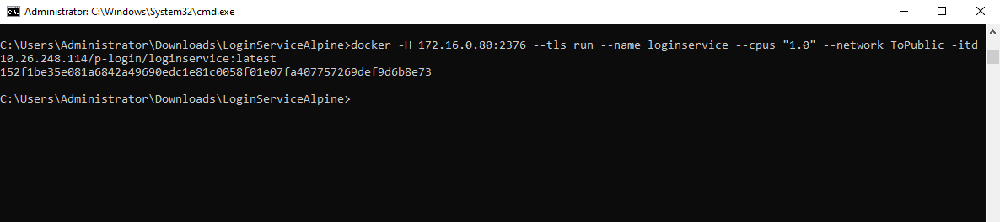

I. Tổng quan
1. Cấu trúc thư mục
II. Chuẩn bị
1. Mở command prompt tại folder LoginServiceAlpine
2. Login vào tài khoản docker 10.26.248.114
UserId/Password: vhcadmin@vsphere.local/Fit@3011
Command: docker login https://10.26.248.114
III. Build image
1. Run câu lệnh sau
Command: docker build -t 10.26.248.114/p-login/loginservice:latest ./
IV. Push image lên 10.26.248.114
1. Run câu lệnh
Command: docker push 10.26.248.114/p-login/loginservice:latest

V. Run Image
1. Pull images về 172.16.0.80
Command: docker -H 172.16.0.80:2376 --tls pull 10.26.248.114/p-login/loginservice:latest
2. Đảm bảo không có images đang kết nối vào ToPublic
Command: docker -H 172.16.0.80:2376 --tls network inspect ToPublic
2.1 Nếu có container đang kết nối vào cần disconnect container đi
Command: docker -H 172.16.0.80:2376 --tls network disconnect ToPublic [ContainerId|ContainerName]
Hoặc docker -H 172.16.0.80:2376 --tls rm -f [ContainerId|ContainerName]
3. Run images trên 172.16.0.80
3.1 Lệnh run cơ bản: docker -H 172.16.0.80:2376 --tls run --name loginweb --network ToPublic -itd 10.26.248.114/p-login/loginservice:latest
3.2 Các lệnh run giới hạn RAM
Sử dụng --memory khi chạy image để giới hạn RAM. Câu lệnh sau đây sẽ giới hạn RAM container có thể sử dụng là 1GB (g: GB, m: MB, k: KB)
Command: docker -H 172.16.0.80:2376 --tls run --name loginweb --memory="1g" --network ToPublic -itd 10.26.248.114/p-login/loginservice:latest
Kết hợp --memory-swap để cho phép container ghi lên disk khi sử dụng hết ram
Command: docker -H 172.16.0.80:2376 --tls run --name loginweb --memory="1g" --memory-swap="2g" --network ToPublic -itd 10.26.248.114/p-login/loginservice:latest
Lưu ý:--memory-swap bao gồm dung lượng của --memory và dung lượng cho phép ghi lên disk. Câu lệnh trên sẽ cho phép container ghi lên disk 1g khi container đã dùng hết RAM.
Sử dụng --memory-reservation để giới hạn RAM có thể sử dụng của container nhưng chỉ đưa ra cảnh khi container vượt quá lượng RAM cho phép.
Command: docker -H 172.16.0.80:2376 --tls run --name loginweb --memory="1g" --memory-reservation="800m" --network ToPublic -itd 10.26.248.114/p-login/loginservice:latest
Câu lệnh trên sẽ giới hạn tối đa RAM của container là một GB vào đưa ra cảnh báo khi container sử dụng quá 800MB.
3.3 Lệnh run giới hạn CPU
Để giới hạn cpu mà container có thể sử dụng sử dụng --cpus
Câu lệnh sau sẽ giới hạn số cpu là 1.
Command: docker -H 172.16.0.80:2376 --tls run --name loginweb --cpus="1.0" --network ToPublic -itd 10.26.248.114/p-login/loginservice:latest
VI. Kiểm tra tài nguyên mà container đang sử dụng
1. Run câu lệnh
Command: docker -H 172.16.0.80:2376 --tls stats [containerId|containerName]
"loginservice" là tên hoặc id của container